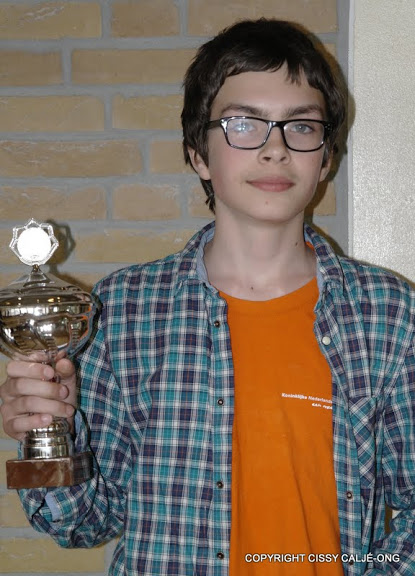

NK JeugdFrom 27 April - 5 May 2013 I played the Dutch Youth Chess Championship for under the 20. I was 5th placed and I hoped to become first and win the title of Dutch champion under the 20. The tournament was held in the Bogerman college in Sneek. My brother Lucas -- who is 12 years old -- took part in the group under the 16.Sneek is a small town in the Netherlands with 10000000 billion inhabitants. It is a really boring town although the inhabitants think otherwise. They speak another language then Dutch because they think they are important but they are definitely not.  Here is the water port of Sneek. Here is the water port of Sneek.
My brother and I everyday went with the train to Sneek It was 1 hour with the train. In the train I read books and I talked with Lucas and analysed my games with my tablet. We once got out of the train with our friends Tjark Vos and Joran Donkers and we saw something really funny. Someone was running with both his hands in his pocket and his trousers were down to his knees. I think that is really difficult but he did it, and then 5 minutes later he came back running with only one hand in his pocket. I guess it was even too difficult for him.  me and my trophy. I mainly took part in the tournament because I could win rating points and I wanted to win the title. The tournament wasn't the best organised tournament I played in. I think that that is because the Dutch Chess Federation is a little low on money and the organisation could not find enough sponsoring. For example you could smell the toilets from a mile away and the first prise was not so high (200 Euro for best player). Furthermore it was a pitty that there were no good day reports. Happily there were some nice analyses from Etienne Goudriaan on the site and also on the website schaaksite.nl . The winner could go to the BDO tournament, which is a really nice challenge. However, they said this only about two weeks before the tournament started. Maybe there would have been stronger players when this was known earlier. Now the best players did not participate in the tournament. The playing venue was pretty good although you had almost no space for your arms and the notation form because of the table was not so big and the live board on witch I played was very big. Still it was a fun tournament and many friends of me took part and I could analyse the games with my opponent's after the games were finished. Talking with my friends during the game was difficult because of the stern arbiter Aart Strik who always thinks that I am talking about my game although that is not true. I simply trust my own moves more :). After the game I also played a fun chess variation it is called bug house chess. What you do is you have 2 teams with two players and 2 boards one board is white and the other one is black. Now if you take a piece from your opponent you pass it to your team-mate and he can insert it on his own board. I got seven points out of nine and finished second. My friend Nick Maatman won the tournament with 7.5 out of nine. Nick and I often analyse games together and play blitz games, so I'm happy that he finished first. My brother Lucas also played a good tournament and finished shared second. After all it was a really fun tournament and I enjoyed it. Here are a few game fragments: |